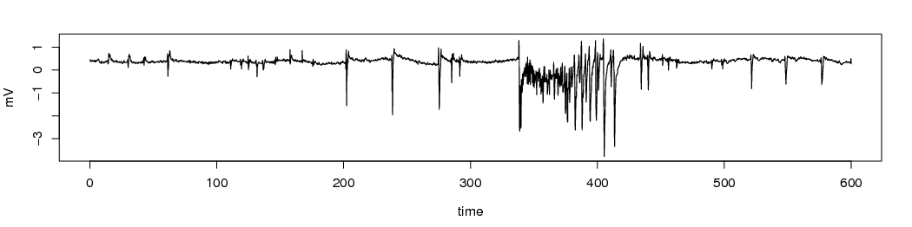

IntroductionThis simulator is designed as a teaching and testing tool for adaptive neurostimulation research and epilepsy therapy.
The simulation faithfully emulates the dynamics of the rat hippocampal brain slice recorded in the Entorhinal Cortex under external electrical stimulation applied to the Amygdala. Key properties of this domain are: nonlinear dynamics, partial observability, noisy observations, and currently unknown first principles. An example of typical simulation output (without stimulation) is depicted below. 
Technical DetailsObservation SpaceThe system is observable through one continuous variable and one discrete variable.
Action SpaceNeurostim receives a single, discrete action from the set {0,1}. The action (1) simulates application of a single electrical pulse to the neural system. The action (0) simulates no stimulation.RewardReward values can be modified via messaging. Suggested rewards:
Additional technical details
Other Details
SourceBoth source includes:
C/C++ source |